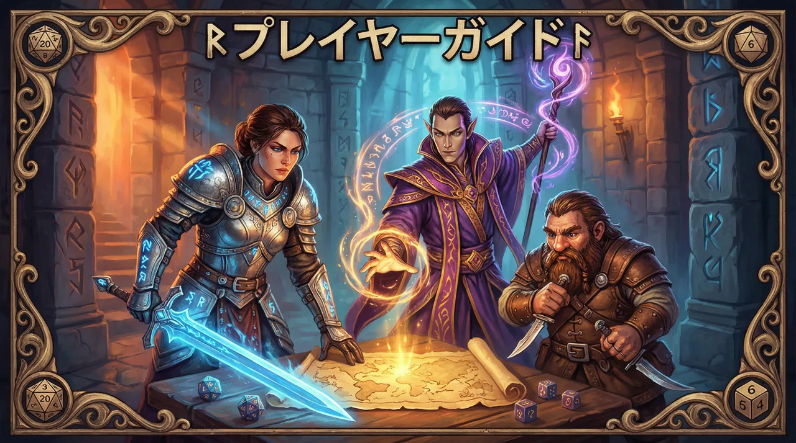
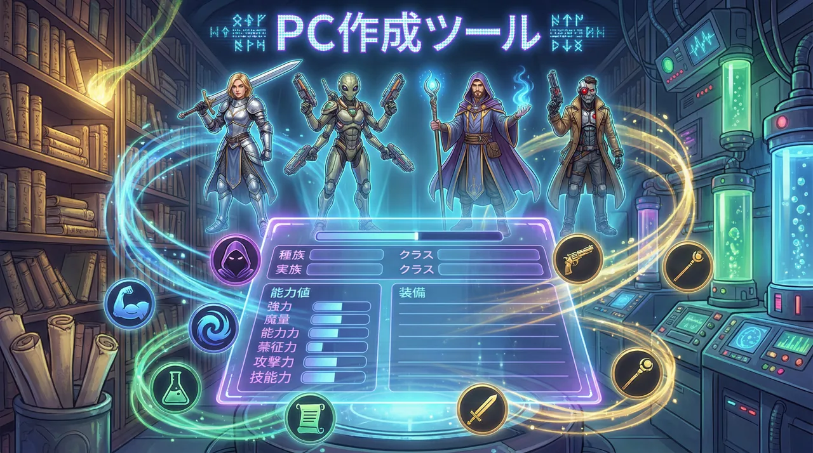
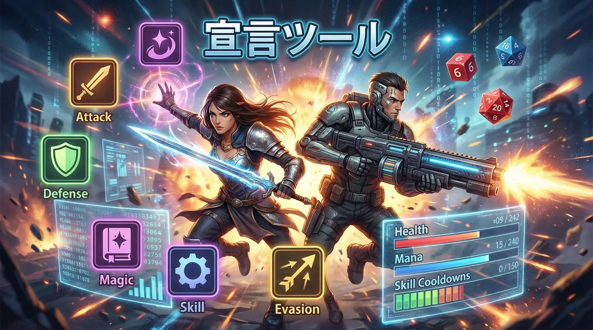
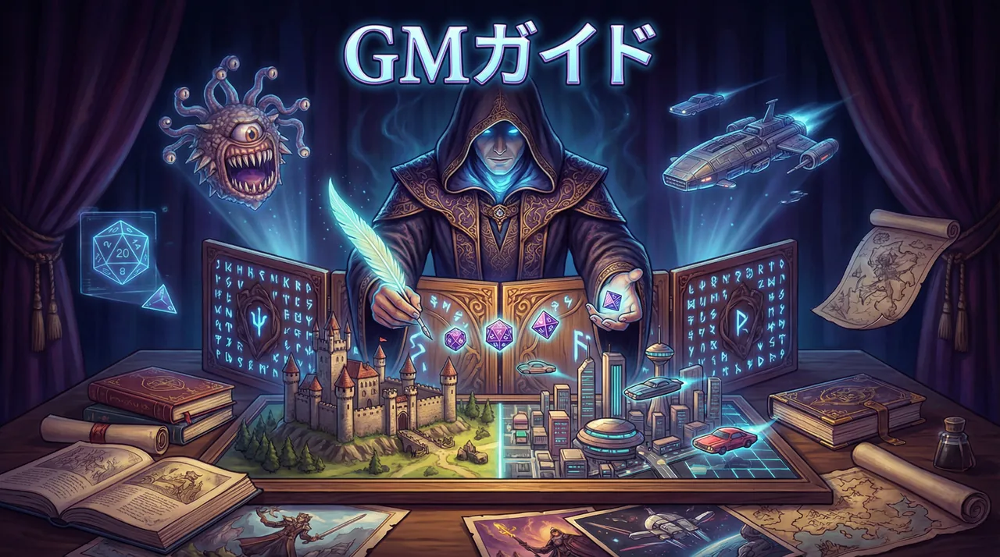
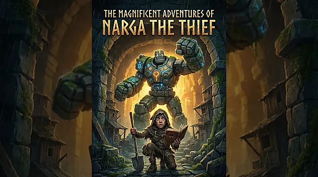

Basic Rules
基本ルール（汎用）
システムそのものの基本ルールと、プレイヤー向けの補助ツールです。まずここを押さえておけば、どの世界観でも遊び始めやすくなります。

プレイヤーズガイド
宣言テンプレート、宣言前確認、難度の見方、卓越宣言、PC作成の基本をまとめた入口です。
開く
PC作成ツール
7項目テンプレートを埋めながら、PC情報を下書きし、そのままGMに渡せるプレーンテキストへ整えられます。
開く
宣言ツール
GM局面の整理表示や任意のPC情報参照をしながら、宣言や宣言前確認の下書きを作れます。
開く
GMガイド
局面テンプレート、難度の置き方、選択肢例、裁定の考え方など、GM側の運用をまとめています。
開く
リプレイ：GM気質比較
同じPC像と短い宣言での4気質比較と、悪辣GMでの think / pro 比較に加えて、卓越宣言で勝ち切る個別実例もまとめて読めます。
開くWorlds
世界観ごとのセクション
世界観ごとに、設定集・シナリオ・リプレイなどをまとめて置ける枠です。ここでは4つの世界観を独立したサブセクションとして並べています。
Fantasy
異世界ファンタジー（イルセア西部・灰冠時代）
遺跡、勢力、神々、噂、PCの立場や野望の種を拾いやすい、現在公開中の世界観セクションです。
Oriental Picaresque
東洋末法ピカレスク（大日輪皇水朝・近世）
近世の東洋帝国「大日輪皇水朝」を舞台に、末法の世を渡り歩くならず者・侠客・密偵たちの活劇を扱う予定の世界観セクションです。
Steampunk
スチームパンク（東雲皇国・近現代）
帝都の街並み、産業、交通、報道、軍事や市井の暮らしを舞台に広げていく予定の世界観セクションです。
Post-Apocalypse
ポストアポカリプス（日本・現代）
崩壊後の現代日本を舞台にしたサバイバル、隔離、探索、共同体運営を扱う予定の世界観セクションです。

Others
その他
旧版や補助資料など、基本ルールや世界観セクションとは別枠で置いておきたいページをまとめる場所です。